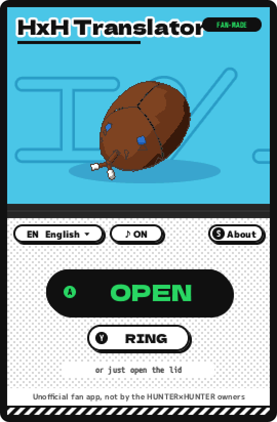
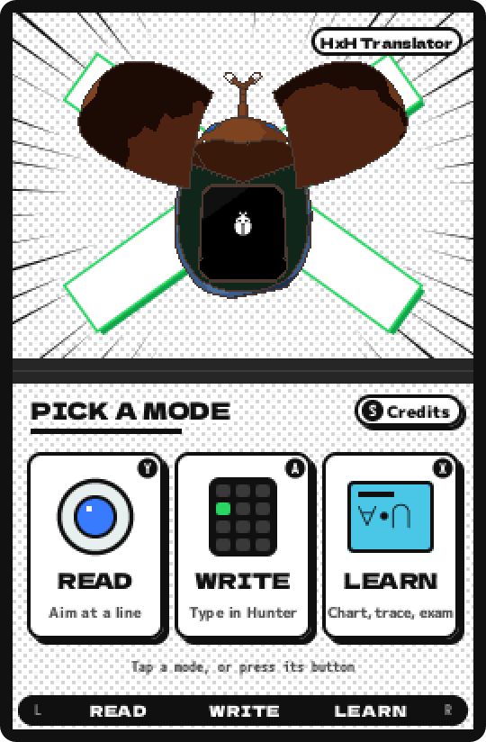
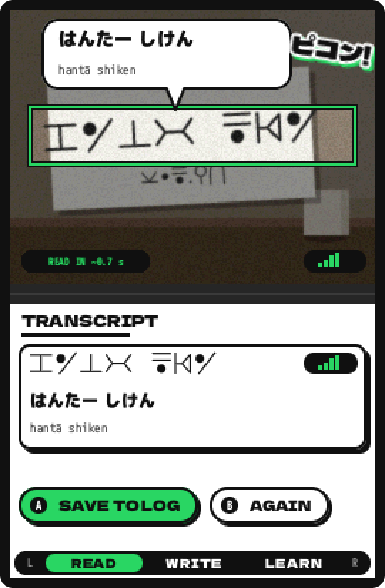
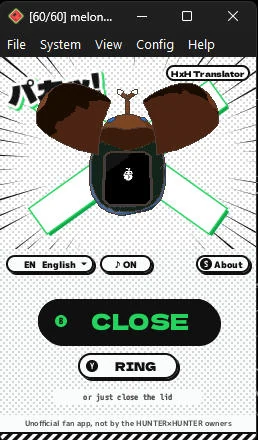
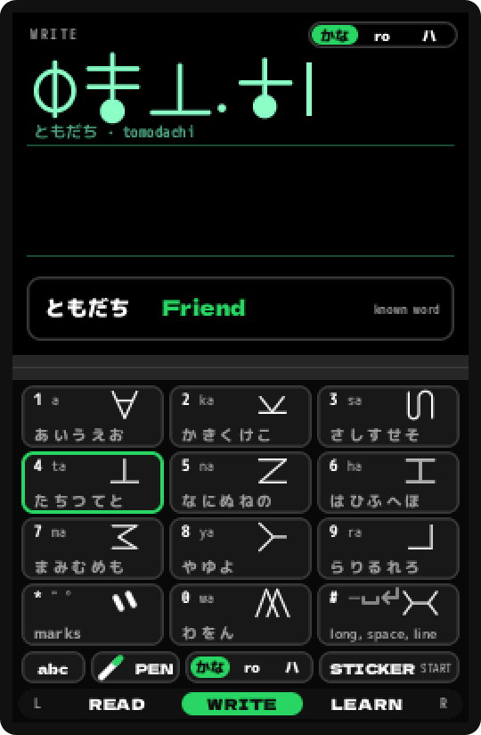
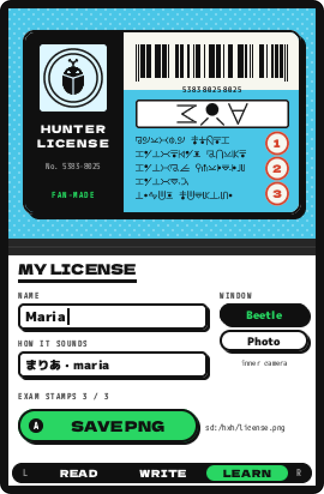
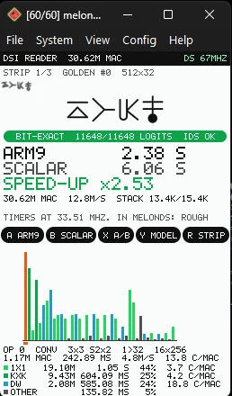

โปรเจกต์ · HxH Translator สำหรับ DSi
อ่านอักษรฮันเตอร์ × ฮันเตอร์บน Nintendo DSi
สามโหมดของ HxH Translator คือ Read, Write และ Learn ถูกสร้างใหม่สำหรับเครื่องเกมพกพาจากปี 2008: แอปภาษา Rust บน ARM9 133 MHz ด้วง 3D ที่วาดด้วยฮาร์ดแวร์ลงเงาแบบการ์ตูนของตัวเครื่องเอง และตัวอ่าน int8 ขนาด 100 KB ที่ใช้การคำนวณเพียงหนึ่งในห้าของตัวอ่านบนเว็บ ซึ่งอ่านหนึ่งบรรทัดผ่านกล้องของ DSi
สถานะ 26 พฤศจิกายน 2026 แอปทำงานบน DSi เครื่องจริง และผ่านการทดสอบของเจ้าของโปรเจกต์บนเครื่องนั้นแล้ว และเวอร์ชัน 0.2.0 ดาวน์โหลดได้ฟรีบน itch.io ซอร์สโค้ดของแอปไม่ได้เผยแพร่ ส่วนโมเดลตัวอ่านของแอป dsi_v1 อยู่บน Hugging Face พร้อมกับโมเดลตัวอื่น ๆ

หน้าแรก ฝาปิดอยู่
เปิดแล้ว: เลือกโหมด
Read: หนึ่งบรรทัดHxH Translator เป็นเว็บแอปที่มีสามโหมด: Read (อ่าน) เล็งกล้องโทรศัพท์ไปที่อักษรฮันเตอร์แล้วแปลงเป็นคานะและตัวอักษรละติน Write (เขียน) แปลงสิ่งที่คุณพิมพ์เป็นอักษรฮันเตอร์ และ Learn (เรียน) สอนตัวอักษรชุดนี้ โพสต์นี้เล่าถึงการนำทั้งสามโหมดไปไว้บน Nintendo DSi เครื่องเกมพกพาจากปี 2008 ที่มีจอเล็ก ๆ สองจอ ปากกาสไตลัส กล้อง และโปรเซสเซอร์ 133 MHz ส่วนที่ยากที่สุดคือ Read: พีซีอ่านหนึ่งบรรทัดในเวลาราวหนึ่งมิลลิวินาที แต่ DS ในอีมูเลเตอร์ใช้เวลาสิบเอ็ดวินาที ต้องใช้ตัวอ่านที่คำนวณน้อยลงห้าเท่าและเคอร์เนล ARM ที่เขียนด้วยมือ จึงลดเวลานั้นลงมาได้
ด้วงที่เปิดออกพร้อมฝาเครื่อง
มาสคอตของเว็บแอปคือด้วงที่กางปีกออกแล้วเผยให้เห็นหน้าจอ DSi เป็นเครื่องแบบฝาพับ ไอเดียจึงมาเองแทบไม่ต้องคิด: เปิดเครื่องก็คือเปิดด้วง จอบนคือหน้าจอของด้วง ส่วนจอสัมผัสด้านล่างคือแผงที่มีปุ่มต่าง ๆ สามโหมดยังคงเหมือนบนเว็บ
ก่อนเขียนโค้ดสักบรรทัด หน้าจอทั้งหมดถูกวาดออกมาเป็นหน้ารวมม็อกอัปสิบสองแบบ แต่ละแบบเป็นแคนวาสขนาด 256 × 192 จริง ๆ ที่ขยายด้วยจำนวนเท่าที่เป็นจำนวนเต็มเท่านั้น เพื่อให้เห็นพิกเซลของ DS ทุกพิกเซล ไม่มีอะไรบนหน้านั้นที่พิมพ์ขึ้นใหม่: หน้านั้นนำเข้าตัววาดสัญลักษณ์ โมเดลด้วง ข้อมูลของ Learn และตัวแปลงโรมาจิมาจากโค้ดของเว็บแอปเอง การวาดม็อกอัปช่วยให้ตัดสินใจบางเรื่องได้ตั้งแต่เนิ่น ๆ คำตอบสี่ข้อของ Hunter Exam (การสอบฮันเตอร์) วางอยู่ตรงตำแหน่งของปุ่ม Y, X, B และ A จะใช้ปากกาสไตลัสหรือไม่ก็ได้ สัญลักษณ์ตัวอย่างของ Learn คือ く ไม่ใช่ ね เพราะในอักษรฮันเตอร์ ね เป็นเส้นปิดเส้นเดียว จึงแสดงลำดับการลากเส้นไม่ได้ ส่วน く มีสามเส้น
ส่วนที่เหลือเกือบทั้งหมดถูกกำหนดโดยสิ่งที่ฮาร์ดแวร์มีให้:
การลงเงาแบบการ์ตูนเป็นเหมือนของขวัญ: เว็บวาดด้วงด้วยแถบสีเรียบ ๆ และเส้นขอบสีหมึก และชิป 3D ของ DS ก็ทำแบบนั้นได้ตรง ๆ ในฮาร์ดแวร์ ปัญหาอยู่ที่โปรเซสเซอร์ ตัวอ่านชุดเร็ว (Fast) บนเว็บต้องคูณบวก (multiply-add หรือ MAC) 154 ล้านครั้งเพื่ออ่านหนึ่งบรรทัด ถ้าเดาว่าทำได้ 30–60 ล้านครั้งต่อวินาที ก็จะใช้ 2.6–5 วินาทีต่อบรรทัด และตัวหาบรรทัดที่หาตัวหนังสือทั้งหน้าจะใช้เวลาเกือบหนึ่งนาที โหมด Read ของ DSi จึงไม่หาบรรทัดเอง คุณเล็งบรรทัดหนึ่งให้อยู่ในแถบเล็ง แล้วแอปจะอ่านเฉพาะบรรทัดนั้น
C ดูแลฮาร์ดแวร์ Rust ทำที่เหลือ
โปรแกรมโฮมบรูว์ (homebrew) ของ DS ส่วนใหญ่เขียนด้วยภาษา C แอปนี้ใช้ BlocksDS ซึ่งเป็นชุดเครื่องมือและไลบรารีฟรี Rust ก็คอมไพล์ให้โปรเซสเซอร์ของ DS ได้เช่นกัน (thumbv5te-none-eabi เป้าหมายที่มีเฉพาะใน Rust รุ่น nightly) และเอนจิน int8 ของโปรเจกต์ก็เขียนด้วย Rust โดยไม่ใช้ไลบรารีมาตรฐานอยู่แล้ว แอปจึงถูกแบ่งเป็นสองส่วน: ชั้น C บาง ๆ ดูแลฮาร์ดแวร์ และ Rust ทำทุกอย่างที่เหลือ
C · BlocksDS
ดูแลฮาร์ดแวร์
- รอการรีเฟรชหน้าจอแต่ละครั้ง แล้วคัดลอกแถวที่ Rust เปลี่ยน
- 3D: display list ของด้วง ตารางเฉดสีแบบการ์ตูน และเส้นขอบ
- เสียง ผ่าน maxmod
- กล้อง การ์ด SD และไฟล์ที่อยู่ใน ROM
- ฝาเครื่อง โหมดสลีป และนาฬิกา
Rust · no_std
ทุกอย่างที่เหลือ
- ทุกฉาก: หน้าแรก, Read, Write, Learn
- วาดทั้งสองหน้าจอเป็นภาพ 16 บิต ด้วยตัวเรนเดอร์ฟอนต์ของตัวเอง
- การจัดวางสัญลักษณ์ฮันเตอร์และกฎของคานะ
- การวัดความคล้าย ข้อสอบ และปริศนาของ Learn
- ตัวอ่าน int8 พร้อมเคอร์เนล ARM9 ในหน่วยความจำความเร็วสูงบนชิป
ฝั่ง Rust คือโค้ดที่พอร์ตมาจาก JavaScript ของเว็บแอป: ตัวแปลงคานะ การจัดวางสัญลักษณ์ฮันเตอร์ ตัววัดความคล้ายของ Learn และปริศนา โค้ดที่พอร์ตมาอาจเพี้ยนไปจากต้นฉบับเล็กน้อยได้ ทุกส่วนที่พอร์ตจึงถูกทดสอบเทียบกับโค้ดของเว็บแอปเอง สคริปต์ Node รัน JavaScript แล้วบันทึกคำตอบไว้ และการทดสอบฝั่ง Rust ต้องได้คำตอบตรงกัน:
- ตัวแปลงคานะ: ไม่ตรงกัน 0 กรณี จากอินพุตที่ไม่ซ้ำกัน 5,437 แบบ และกรณีการแปลง 10,769 กรณี
- การจัดวางสัญลักษณ์: คลาดเคลื่อนไม่เกิน 0.0001 ของขนาดฟอนต์ใน 120 กรณี และความกว้างของข้อความคลาดจากที่ Chrome วัดได้ไม่เกิน 0.1 px
- ความคล้ายของ Learn: คานะในตารางครบทั้ง 3,403 คู่ คลาดเคลื่อนไม่เกิน 0.00000054 ของขนาดฟอนต์ และได้รายการตัวที่หน้าตาคล้ายกัน 200 รายการ ข้อสอบที่กำหนด seed ไว้ 15 ชุด และปริศนารายวัน 440 วัน เหมือนกันทุกอย่าง
การพอร์ตตัววัดความคล้ายต้องลองสองรอบ เวอร์ชันแรกใช้พิกัดแบบจุดตรึง (fixed-point) ที่ปัดเศษแล้ว และรายการตัวที่หน้าตาคล้ายกัน 5 จาก 200 รายการออกมาเรียงลำดับต่างไป ใน JavaScript มีค่าที่เท่ากันพอดี (は, ば และ ぱ มีรูปร่างเดียวกัน ต่างกันแค่เครื่องหมาย) และมีช่องห่างที่เล็กเพียง 0.0000046 แค่การปัดเศษจึงพอจะทำให้ตัวที่อยู่ติดกันสลับลำดับกัน การใช้พิกัดจำนวนเต็มที่มีจำนวนบิตมากขึ้น ซึ่งดึงมาจากข้อมูลสัญลักษณ์โดยตรง แก้ปัญหานี้ได้
การทดสอบยังเจอบั๊กสองตัวในเว็บแอปเองด้วย การพิมพ์ชื่อ “Reā” ทำให้ Write แสดง リーundefined และคำว่า “constructor” ถูกค้นหาไปเจอฟังก์ชัน Object ของ JavaScript เอง แถบจึงแสดง function Object() { [native code] } ตอนนี้ทั้งสองบั๊กถูกแก้ในโค้ดของเว็บแอปแล้วด้วย
หกสายงานพร้อมกัน
เมื่อโครงแอปวาดอักษรฮันเตอร์ในอีมูเลเตอร์ (melonDS) ได้แล้ว งานก็ถูกแบ่งเป็นหกสายงานที่ทำไปพร้อมกัน แต่ละสายงานอยู่ในเซสชันเขียนโค้ดด้วย AI ของตัวเองและมีไฟล์ของตัวเอง แล้วรายงานกลับไปยังเซสชันประสานงาน ซึ่งเป็นผู้รวมงาน จดบันทึกการทำงาน และตรวจผลในอีมูเลเตอร์ ทั้งหกสายงานเสร็จในเวลาราวหนึ่งชั่วโมง
| สายงาน | สิ่งที่สร้าง | ตัวเลขที่สำคัญ |
|---|---|---|
| A ตัวหนังสือ | ฟอนต์ฟรีสามตัว (Dela Gothic One, M PLUS 1p, M PLUS 1 Code) ถูกแปลงเป็นฟอนต์บิตแมป 46 ชุดพร้อมการจัดระยะตัวอักษร (kerning) และข้อความในอินเทอร์เฟซ 482 ข้อความเป็นภาษาอังกฤษและญี่ปุ่น | การวาดลายมือหนึ่งเฟรมบนพีซีลดจาก 72.8 µs เหลือ 1.0 µs ด้วยการวาดใหม่เฉพาะกรอบที่เปลี่ยน (มัธยฐาน 77 พิกเซล แทนที่จะเป็น 49,152) |
| B ด้วง | ด้วงของเว็บที่ส่งออกจากโค้ดของเว็บเอง ลดรายละเอียดลง แล้วแปลงเป็น display list ของ DS พร้อมตารางเฉดสีแบบการ์ตูนและเส้นขอบ | สามเหลี่ยม 25,736 รูปเหลือ 1,484 รูป ใช้ราว 800 โพลิกอนต่อเฟรม จาก 2,048 ที่ทำได้ |
| C Write | ตัวแปลงคานะและแป้นแบบกดซ้ำ (multi-tap) 12 ปุ่ม โดยใช้จังหวะเวลาเดียวกับเว็บ | ไม่ตรงกัน 0 กรณีจากอินพุต 5,437 แบบ และเจอบั๊กของเว็บสองตัว |
| D Learn | ตารางตัวอักษร คำตัวอย่าง 200 คำ ปริศนา 42 ข้อ ตัววัดความคล้าย และคะแนนแบบใหม่สำหรับการลากตามรอยด้วยปากกาสไตลัส | การลากตามรอยที่สมบูรณ์แบบได้ 3 ตราประทับกับคานะครบทั้ง 83 ตัว และไม่มีตัวที่หน้าตาคล้ายกันตัวไหนได้ 2 ตราขึ้นไป |
| E Read | เอนจิน int8 ที่บิลด์สำหรับ DS พร้อมเคอร์เนล ARM9 ที่เขียนด้วยมือสำหรับชั้นที่พบบ่อยที่สุดของมัน | ตรงกับพีซีทุกบิตบนชั้นสุ่มราว 3,200 ชั้น และเอาต์พุตอ้างอิง 24 ชุด |
| F เสียง | เอฟเฟกต์เสียง 13 เสียงและเสียงแป้นกด 12 เสียงของเว็บ ที่แปลงให้ใช้กับมิกเซอร์ของ DS | เสียงแป้นกดแต่ละเสียงคลาดจากของเว็บไม่เกิน 2 Hz รวมเสียงทั้งหมด 478 KB |
 ROM แรก
ROM แรก
ด้วง 3D ที่เปิดออกสิ่งที่อีมูเลเตอร์ไม่ได้แสดงให้เห็น
melonDS เป็นอีมูเลเตอร์ที่ดีมาก แต่มันวาดภาพ 3D แต่ละเฟรมในครั้งเดียว ส่วน DS ของจริงวาดภาพ 3D ทีละบรรทัด ระหว่างที่หน้าจอกำลังแสดงผล โดยมีบัฟเฟอร์เล็ก ๆ ไว้เก็บบรรทัดที่วาดเสร็จแล้ว ครั้งแรกที่แอปรันบน DSi ของเจ้าของโปรเจกต์ ด้วงมีรูโหว่: จุดสีขาวเรียงเป็นแถวพาดผ่านกระดอง และหน้าจอที่ขาดเป็นริ้ว ๆ เมื่อด้วงเปิดออก ไม่มีอาการเหล่านี้สักอย่างเคยปรากฏในอีมูเลเตอร์
สีขาวนั้นคือภาพที่อยู่ด้านหลังด้วงซึ่งโผล่ให้เห็น แปลว่าพิกเซลของตัวด้วงเองไม่ได้ถูกวาดบนบรรทัดเหล่านั้น รูโหว่เรียงตัวอยู่ในแถวที่มีหลายชั้นซ้อนทับกัน เช่น เลนส์ตาที่อยู่บนกระดอง แอปมีโอเวอร์เลย์สำหรับดีบักอยู่แล้ว ROM ถัดมาจึงเพิ่มโหมดทดสอบสี่โหมดที่ปิดฟีเจอร์บางอย่าง เจ้าของโปรเจกต์ลองแต่ละโหมดบน DSi:
| T0 ตามที่ออกแบบ | T1 ไม่มีเส้นขอบ | T2 ไม่มีบิตแมประนาบหลัง | T3 ไม่มีทั้งสองอย่าง | |
|---|---|---|---|---|
| หน้าแรก ปิดอยู่ | มีรู | มีรู | สมบูรณ์ | สมบูรณ์ |
| เปิดออก | มีรู | มีรู | สมบูรณ์ | สมบูรณ์ |
ตัวการคือบิตแมประนาบหลัง (rear-plane bitmap) ฟีเจอร์ของ DS ที่วางภาพไว้ด้านหลังฉาก 3D มันทำให้ชิป 3D ต้องอ่านค่าสีและค่าความลึกของทุกพิกเซลที่อยู่หลังด้วง และบนบรรทัดที่แออัด การอ่านเพิ่มนี้ทำให้ชิปทำงานไม่ทันเวลา ส่วนเส้นขอบไม่ได้ทำให้เกิดผลเสียที่มองเห็นได้ วิธีแก้คือย้ายภาพที่อยู่หลังด้วงออกจากชิป 3D ไปเลย แล้วไปไว้บนเลเยอร์ 2D ธรรมดา:
บิลด์แรก
มีรูบนบรรทัดที่แออัด
หลังแก้
สมบูรณ์บน DSi
การทดสอบบนเครื่องจริงครั้งถัดมาเจออีกหนึ่งปัญหา: ทั้งหน้าจอกะพริบเป็นสีขาวหนึ่งเฟรมทุกครั้งที่มีคำปรากฏขึ้น หรือเมื่อด้วงเปิดหรือปิด เพื่อไม่ให้คำเก่าทิ้งเงาไว้หลังด้วง ทุกการเปลี่ยนแปลงจะส่งพื้นหลังอย่างเดียวไปก่อน แล้วส่งภาพเต็มตามไปในอีกหนึ่งเฟรม ระหว่างนั้นหน้าจอจึงแสดงแต่กระดาษสีขาว ในอีมูเลเตอร์ มันเป็นแค่การกะพริบที่แทบมองไม่เห็น วิธีแก้คือคำสั่งใหม่: ฉากจะส่งภาพที่ควรอยู่หลังด้วงมาให้ แล้วทั้งสองเลเยอร์จะเปลี่ยนในการรีเฟรชหน้าจอครั้งเดียวกัน คำตัดสินของเจ้าของโปรเจกต์ต่อบิลด์ถัดมา: “ใช้งานได้ดีมาก”
บีบให้พอดีกับ 4 MB
DSi มีหน่วยความจำ 16 MB แต่ ROM เดียวกันนี้ก็รันบน DS รุ่นแรกได้ด้วย ซึ่งมีแค่ 4 ตอนแรกทุกอย่างอยู่ในอิมเมจหน่วยความจำของโปรแกรม: ฟอนต์อย่างเดียวก็ 1.3 MB แล้ว เสียงอีกครึ่งเมกะไบต์ และโมเดลตัวอ่านกับแถบภาพทดสอบของมันอีก 0.7 MB การสลับจากตัวอ่านหนึ่งไปอีกตัวในโหมด DS รุ่นแรกทำให้ขึ้นข้อความ “NO MEMORY: THE READER NEEDS 360K” (หน่วยความจำไม่พอ: ตัวอ่านต้องใช้ 360K) เป็นข้อความที่เรียบร้อยแทนที่จะแครช เพราะตัวอ่านขอหน่วยความจำด้วยวิธีที่ยอมให้คำขอล้มเหลวได้ แต่ก็เป็นสัญญาณของปัญหาที่กำลังจะตามมา
วิธีแก้คือย้ายฟอนต์ ข้อความ เสียง และโมเดลไปไว้ในระบบไฟล์ของ ROM เอง (NitroFS) แล้วโหลดเมื่อฉากต้องใช้: ฟอนต์โหลดเมื่อถูกใช้วาดครั้งแรก ข้อความโหลดทีละภาษา เสียงโหลดเมื่อเล่นครั้งแรก และตัวอ่านโหลดทีละตัว แต่ละฉากถูกสร้างเมื่อคุณเข้าไป และหลังเฟรมแรกของฉาก ทุกอย่างที่ฉากไม่ได้ใช้จะถูกคืนหน่วยความจำ
| ก่อน | หลัง | |
|---|---|---|
| ข้อมูลแบบอ่านอย่างเดียวในหน่วยความจำ | 2,676,824 B | 180,992 B |
| อิมเมจที่อยู่ในหน่วยความจำทั้งหมด | 3,196,500 B | 938,188 B |
| หน่วยความจำว่างตอนเริ่ม | 473,516 B | 2,731,828 B |
| หน่วยความจำว่างในแต่ละฉาก วัดใน melonDS | ||
| หน้าแรก | – | 2,719 KB |
| Write หลังพิมพ์ ともだち | – | 2,428 KB |
| Learn หน้าตาราง | – | 2,661 KB |
ในทุกฉาก บล็อกว่างที่ใหญ่ที่สุดเท่ากับหน่วยความจำว่างทั้งหมด แปลว่าหน่วยความจำไม่ได้แตกเป็นชิ้น ๆ
Write: โทรศัพท์ฝาพับ คีย์บอร์ด และปากกา
Write ทำงานเหมือนโทรศัพท์ฝาพับรุ่นเก่า: แตะปุ่มหนึ่งครั้งได้ あ สองครั้งได้ い จอบนจะเขียนสัญลักษณ์ฮันเตอร์แต่ละตัวทีละเส้นขณะที่คุณพิมพ์ และการ์ดความหมายจะแสดงคำที่รู้จัก เช่น ともだち “เพื่อน” คีย์บอร์ด QWERTY ใช้พิมพ์โรมาจิและชื่อ ทุกอย่างที่คุณเขียนกลายเป็นสติกเกอร์ได้ในเจ็ดสไตล์ และบันทึกเป็นไฟล์ PNG ลงการ์ด SD ด้วยตัวเขียน PNG ขนาดเล็กที่เขียนขึ้นสำหรับ DS
หลังได้ลองใช้ เจ้าของโปรเจกต์ขอให้เพิ่มการเขียนด้วยลายมือ คุณวาดตัวอักษรฮันเตอร์ด้วยปากกาสไตลัส แล้วคานะของตัวนั้นจะถูกใส่ลงในข้อความ หลังทุกเส้นที่ลาก ปากกาจะเทียบภาพวาดของคุณกับแม่แบบ 79 แบบ ซึ่งครอบคลุมทุกสัญลักษณ์และทุกรูปแบบรวมทั้งแบบที่มีเครื่องหมาย โดยใช้การวัดระยะห่างระหว่างภาพวาดแบบเดียวกับที่ Learn ใช้หาตัวที่หน้าตาคล้ายกัน บนภาพวาดทดสอบ 3,160 ภาพที่สร้างจากเส้นของสัญลักษณ์เอง คานะที่ถูกต้องเป็นคำตอบอันดับหนึ่ง 98.9% ของครั้งสำหรับภาพวาดที่เรียบร้อย และ 94.3% สำหรับภาพวาดที่ลวก ๆ และอยู่ในคำตอบห้าอันดับที่แสดง 99.2% ของครั้งหรือมากกว่า ประมาณการว่าการอ่านหนึ่งครั้งใช้เวลา 18 ms บน DS รุ่นแรก ส่วนลายมือจริงยังเป็นแค่การลองเขียนดูเอง ยังไม่ได้วัดผล

แป้นกด ปากกา
ปากกา สติกเกอร์
สติกเกอร์
My License
Learn: ลากตามรอย สอบ ปริศนา
บนโทรศัพท์ “ลากตามรอยด้วยนิ้ว” เป็นฟีเจอร์ที่ถูกเลื่อนไปทำทีหลังเสมอ แต่พอมีปากกาสไตลัส มันกลายเป็นหัวใจของ Learn Trace it (ลากตามรอย) แสดงสัญลักษณ์จาง ๆ พร้อมหมายเลขกำกับแต่ละเส้น คุณลากตามรอย แล้วแต่ละเส้นจะได้คะแนนตามว่ามันเบี่ยงออกจากเส้นของสัญลักษณ์จริงมากแค่ไหน ทั้งโดยเฉลี่ยและที่ปลายเส้น การได้สามตราประทับต้องคลาดเคลื่อนไม่เกิน 3.2% ของขนาดฟอนต์ และตัวที่หน้าตาคล้ายกันต่อให้วาดได้สมบูรณ์แบบก็ไม่เคยได้เกินหนึ่งตรา Hunter Exam (การสอบฮันเตอร์) ถามเป็นสามช่วง (จากสัญลักษณ์ไปคานะ จากคานะไปสัญลักษณ์ และทั้งคำ) โดยคำตอบผิดเลือกมาจากตัวที่หน้าตาคล้ายสัญลักษณ์นั้นจริง ๆ และการสอบผ่านจะได้ใบอนุญาตที่เห็นด้านบน
Today's puzzle (ปริศนาประจำวัน) ให้คำวันละหนึ่งคำ ให้ถอดรหัสทีละสัญลักษณ์ Puzzle Run มาทีหลังตามคำขอของเจ้าของโปรเจกต์: คำจะมาเรื่อย ๆ จนกว่าจะตอบผิดครบสามครั้ง และเกมจะยากขึ้นเรื่อย ๆ ขณะเล่น
| คำที่ตอบได้ | ระดับ | ความยาวคำ | ตัวเลือกที่ผิด | แสดงโรมาจิ | เวลาต่อสัญลักษณ์ |
|---|---|---|---|---|---|
| 0–2 | 1 | 1–2 | ไม่คล้ายเลย | ใช่ | ไม่มี |
| 3–5 | 2 | 2–3 | คล้ายนิดหน่อย | ใช่ | ไม่มี |
| 6–9 | 3 | 2–3 | คล้ายขึ้น | ใช่ | ไม่มี |
| 10–14 | 4 | 3–4 | สิบตัวที่คล้ายที่สุด | ไม่ | ไม่มี |
| 15 ขึ้นไป | 5+ | 3–5 | หกตัวที่คล้ายที่สุด | ไม่ | 10 วินาที แล้วลดลงคำละ ½ วินาที จนเหลือ 4 วินาที |
 ตาราง
ตาราง Trace it
Trace it การสอบ
การสอบ Puzzle Run
Puzzle Runอ่านบน ARM9 133 MHz
ตัวอ่านเป็นโครงข่ายประสาทเทียมแบบคอนโวลูชันขนาดเล็ก (บทความทำงานอย่างไรแสดงวิธีที่มันอ่านหนึ่งบรรทัด) ตัวเลขของมันเก็บเป็น int8 ตัวละหนึ่งไบต์ และเอนจินของโปรเจกต์รันมันด้วยการคำนวณเลขจำนวนเต็มล้วน เอนจินนั้นเขียนด้วย Rust โดยไม่ใช้ไลบรารีมาตรฐาน เพื่อใช้กับไมโครคอนโทรลเลอร์ ESP32 จึงคอมไพล์ให้ DS ได้โดยไม่ต้องแก้อะไรเลย คำถามจึงอยู่ที่ความเร็ว
ARM9 ของ DS ไม่มีคำสั่งที่คูณตัวเลขเล็ก ๆ หลายตัวพร้อมกัน ซึ่งเป็นวิธีที่โทรศัพท์และพีซีใช้รันโครงข่ายได้เร็ว แต่มันมี SMLAxy ซึ่งคูณค่า 16 บิตสองค่าที่เป็นครึ่งหนึ่งของรีจิสเตอร์ แล้วบวกผลลัพธ์เข้าไปในคราวเดียว สายงาน E เขียนเคอร์เนลโดยใช้คำสั่งนี้เป็นแกนสำหรับคอนโวลูชัน 1×1 ซึ่งเป็นชั้นที่ทำงานส่วนใหญ่ของตัวอ่าน: มันคำนวณครั้งละ 2 เอาต์พุต × 4 แชนเนล ยาว 508 ไบต์ และอยู่ในหน่วยความจำคำสั่งขนาดเล็กบนชิปของ ARM9 ซึ่งทำให้มันรันได้โดยไม่ต้องรอหน่วยความจำหลัก ผลลัพธ์ทุกค่าต้องตรงกันทุกบิต: ได้ไบต์เดียวกับพีซี ตรงไปจนถึงหลักสุดท้ายของทุกคะแนน
การลองครั้งแรกในอีมูเลเตอร์อ่านไม่เคยเสร็จเลย หน้าจอแสดง READING อยู่ห้านาที สาเหตุไม่ใช่ความช้า: เครื่องมือที่วัดว่าตัวอ่านใช้สแต็กไปเท่าไร ทำงานโดยเติมลวดลายลงในสแต็กส่วนที่ยังไม่ได้ใช้ และหลังจากคอมไพเลอร์ inline มันเข้าไป มันก็ทาลวดลายทับตัวแปรที่ยังใช้งานอยู่ของฟังก์ชันที่เรียกมันเอง พอยน์เตอร์ถัดไปที่ตัวอ่านใช้จึงกลายเป็นลวดลาย 0xA5C35A3C โปรเซสเซอร์เกิด fault และเพราะไม่มีตัวจัดการ fault หน้าจอจึงค้างไปเฉย ๆ การทดสอบบนพีซีมองไม่เห็นปัญหานี้ เพราะตัวทาลวดลายไม่ทำอะไรเลยเมื่อไม่ได้อยู่บน DS เมื่อแก้แล้ว ตัวอ่านก็รันได้ และตรงกับพีซีทุกค่า: คะแนนเอาต์พุต 17,472 จาก 17,472 ค่า
เคอร์เนลทำให้ตัวอ่านชุดเร็วของเว็บเร็วขึ้น 2.7 เท่า แต่ 11 วินาทีต่อบรรทัดก็ยังช้าเกินไปมาก เคอร์เนลที่เร็วขึ้นช่วยได้แค่ระดับหนึ่ง ตัวอ่านเองต้องเล็กลง
dsi_v1: การคำนวณเหลือหนึ่งในห้า
สายงาน E ประเมินต้นทุนของตัวอ่านขนาดเล็กหลายแบบด้วยแบบจำลองต้นทุนที่สร้างจากความเร็วที่วัดได้ของเคอร์เนล แล้วแนะนำตัวที่ถูกที่สุดในบรรดาตัวที่เคยพิสูจน์ผลงานมาแล้ว: สามสเตจแรกของโครงข่าย MobileNetV4 ตัวเดิม (ตัวอ่านเต็มมีสี่สเตจ) ที่ความสูง 32 พิกเซลแทน 48 โปรเจกต์เคยฝึกโครงข่ายรูปแบบนี้มาแล้วสองครั้ง ครั้งนี้ฝึกด้วยข้อมูล v6 มันจึงอ่านตัวเลขและเครื่องหมายวรรคตอนบางตัวได้ด้วย จากนั้นปรับละเอียดสำหรับ int8 และแปลงผ่านขั้นตอนชุดเดียวกับตัวอ่านของเว็บ ซึ่งตรวจมันทุกบิตเทียบกับตัวจำลอง int8 ของ Espressif
| ชุดเร็ว บนเว็บ | dsi_v1 | |
|---|---|---|
| โครงข่าย | MobileNetV4-small, 4 สเตจ | 3 สเตจแรก |
| บรรทัดอินพุต | 48 × 768 px | 32 × 512 px |
| พารามิเตอร์ | 323,995 | 96,923 |
| การคูณบวกต่อบรรทัด | 154.19 M | 30.62 M |
| ไฟล์โมเดล int8 | 339,552 B | 103,856 B |
| หน่วยความจำขณะทำงาน | 368,640 B | 163,840 B |
| หนึ่งบรรทัดบนพีซี, WebAssembly | 5.96 ms | 1.24 ms |
การฝึกใช้เวลาราว 30 นาทีบน RTX 4080 SUPER หนึ่งตัว: การปรับละเอียดสองขั้น (12,000 และ 3,000 สเต็ป) และการฝึกแบบรับรู้การควอนไทซ์ 4,000 สเต็ป โมเดล int8 ให้ผลตรงกับตัวจำลองของ Espressif บนบรรทัดทดสอบ 512 จาก 512 บรรทัด ในทุกบิลด์ของเอนจิน รวมถึงบิลด์ของ DS
ความผิดพลาดที่เพิ่มขึ้นส่วนใหญ่อยู่ที่เครื่องหมายเล็ก ๆ ที่ความสูง 32 พิกเซล จุดที่เปลี่ยน か เป็น が กว้างแค่ไม่กี่พิกเซล ข้อผิดพลาดที่พบบ่อยของมันจึงเป็น が → か และ ぱ → ば รวมถึงการพลาดช่องว่างระหว่างคำ แต่บนเครื่องเกม การแลกนี้คุ้มค่า:

ผลการทดสอบความเร็วที่แยกตามชั้นชี้ให้เห็นเป้าหมายถัดไป คอนโวลูชัน 1×1 ใช้ 3.7 รอบสัญญาณนาฬิกาของโปรเซสเซอร์ต่อการคูณบวกหนึ่งครั้ง และคอนโวลูชันที่ใหญ่กว่าใช้ 4.2 แต่คอนโวลูชันแบบ depthwise ซึ่งยังไม่มีเคอร์เนล ใช้ครั้งละ 18.8 รอบ และกินเวลาหนึ่งในสี่ของทั้งหมด เคอร์เนลตัวที่สองอ่านสี่แชนเนลด้วยการโหลด 32 บิตครั้งเดียว แล้วแยกเป็นครึ่ง 16 บิตด้วยมาสก์สองตัว โดยไม่ต้องแตกข้อมูล (unpack): 12 คำสั่งต่อการคูณบวก 4 ครั้ง หรือราว 3.5 รอบต่อครั้งเมื่อนับคำสั่ง มันผ่านการทดสอบกับชั้นสุ่ม 5,000 ชั้นโดยไม่มีค่าไหนไม่ตรงเลย
มีการเปลี่ยนแปลงอีกอย่างที่ทำให้หน้าจอยังตอบสนองขณะอ่าน การอ่านทั้งหมดรวดเดียวจะทำให้แอปค้างไปหนึ่งถึงสองวินาที ตอนนี้ตัวอ่านจึงทำงานเป็นช่วงเล็ก ๆ ช่วงละราวครึ่งล้านการคูณบวก และหยุดหลังผ่านไปราว 12 ms ในแต่ละเฟรม ตัวอ่าน DSi มีทั้งหมด 86 ช่วง และแถบความคืบหน้าจะเติมขึ้นเมื่อแต่ละช่วงเสร็จ
อ่านด้วยกล้อง
กล้องของ DSi ให้อินพุตกับตัวอ่านแทบจะฟรี ภาพถ่ายเต็มภาพมาในรูปความสว่างบวกสี และส่วนความสว่างก็คือภาพสีเทาที่ตัวอ่านต้องการพอดี ไดรเวอร์กล้องสตรีมภาพพรีวิวสดลงในบัฟเฟอร์สามชุดในหน่วยความจำหลัก กล้องจึงไม่ต้องรอแอปเลย และถ่ายภาพนิ่งขนาด 640 × 480 เมื่อสั่ง มันใช้หน่วยความจำ 888 KB ขณะเปิดอยู่ และไม่ใช้เลยเมื่อปิด

- เล็ง ภาพพรีวิวนอกแถบเล็งจะถูกหรี่ลง ทุก ๆ หกเฟรม การตรวจแบบเร็วภายในแถบจะขยับขีดสัญญาณและเปลี่ยนคำแนะนำ (“Get closer” หรือเข้าใกล้อีก, “More light” หรือเพิ่มแสง)
- กด A แอปถ่ายภาพนิ่งแล้วตัดส่วนที่อยู่ในแถบออกมา ภาพที่ตัดได้จะถูกย่อและเติมขอบให้เป็น 32 × 512 แบบเดียวกับที่เว็บแอปเตรียมบรรทัดทุกประการ: มีการทดสอบที่รัน JavaScript ของเว็บเองใน Node แล้วได้ไบต์เดียวกัน
- อ่าน กล้องจะปิดลง ตัวอ่านจึงได้ใช้โปรเซสเซอร์และหน่วยความจำเต็มที่ แล้วตัวอ่านก็ทำงานไปทีละช่วง: ราว 37 เฟรมบนแถบความคืบหน้า
- ผลลัพธ์ บอลลูนคำพูดที่มีคานะ โรมาจิ และความหมายถ้าเป็นคำที่รู้จัก คานะที่ตัวอ่านมั่นใจไม่ถึง 60% จะถูกขีดเส้นใต้ แตะที่ตัวนั้นเพื่อดูคำตอบอันดับสอง ปุ่ม SAVE TO LOG จะเพิ่มบรรทัดนั้นลงในไฟล์ข้อความบนการ์ด SD
บรรทัดที่เขียนจากบนลงล่างต้องใช้อีกหนึ่งเคล็ดลับ เพราะไม่มีตัวอ่านแนวตั้งขนาดเล็ก แอปจะตัดคอลัมน์ออกเป็นสัญลักษณ์ทีละตัวตามตำแหน่งของหมึก แล้วจัดให้ตั้งตรงเรียงกันในแนวนอน จากนั้นตัวอ่านแนวนอนก็อ่านมัน
การเขียนไดรเวอร์ทำให้เจอเรื่องน่าแปลกใจบางอย่างในไลบรารีของ DS: มันนับหมายเลขกล้องกลับด้าน (กล้องด้านนอกคือ 1) มันกลับภาพของกล้องด้านนอกเหมือนกระจก และถ้าเซ็นเซอร์กล้องไม่ตอบสนองเลย โปรเซสเซอร์ตัวที่สองของ DS จะรอไปตลอดกาล ในจุดที่ไม่มีอะไรบนโปรเซสเซอร์หลักจับได้
อีมูเลเตอร์ทดสอบเรื่องเหล่านี้ไม่ได้เลย เพราะเท่าที่รู้ มันไม่ได้จำลองกล้องของ DSi ครั้งแรกที่โค้ดกล้องรันบนอะไรสักอย่างที่ไม่ใช่พีซี จึงเป็นบน DSi ของเจ้าของโปรเจกต์ รายงานที่ส่งกลับมา: “ทุกอย่างใช้งานได้หมด” ทั้งภาพพรีวิว ภาพนิ่ง ไฟที่ดับลง การอ่านบรรทัดทั้งแนวนอนและแนวตั้ง และบันทึกบนการ์ด SD
ตอนนี้อยู่ตรงไหน
ทุกอย่างข้างต้นเกิดขึ้นภายในวันเดียว คือวันที่ 26 พฤศจิกายน 2026 ตั้งแต่รายการฟีเจอร์แรกจนถึง ROM ที่เจ้าของโปรเจกต์ทดสอบบน DSi ROM สุดท้ายมีขนาด 3.8 MB เวอร์ชัน 0.1.0 และรันแอปได้ครบทั้งหมด: ด้วง, Read, Write พร้อมปากกา, Learn พร้อม Puzzle Run และการบันทึกลงการ์ด SD
- ปล่อยแล้ว เวอร์ชัน 0.2.0 ดาวน์โหลดได้ฟรีบน itch.io: kokkakniphon.itch.io/hxh-translator-dsi
- ยังไม่ได้จดความเร็วบน DSi ไว้ โอเวอร์เลย์แสดงค่านี้อยู่ แต่การทดสอบจนถึงตอนนี้เน้นว่าทุกอย่างใช้งานได้หรือไม่ แบบจำลองต้นทุนบอกว่าราว 0.6–0.7 วินาทีต่อบรรทัดในโหมด DSi ส่วนอีมูเลเตอร์วัดได้ 2.38 วินาทีที่ความถี่ครึ่งหนึ่งของ DS รุ่นแรก ก่อนจะมีเคอร์เนล depthwise
- การอ่านภาพถ่ายจากการ์ด SD อยู่ในแผน และตอนนี้ยังถูกปิดไว้เป็นสีเทา ถ้าทำ มันจะใช้ตัวหาบรรทัดเป็นงานเบื้องหลังที่ทำงานช้า ๆ
- ยังไม่ได้ทดสอบบน DS รุ่นแรก (ซึ่ง Read ถูกปิดไว้เป็นสีเทา เพราะไม่มีกล้อง) หรือบน 3DS
- ตัวเลขความแม่นยำทุกตัวในที่นี้วัดบนภาพที่สร้างขึ้น ปากกาและตราประทับของ Trace it ถูกปรับจูนด้วยภาพวาดสังเคราะห์ ไม่ใช่ลายมือจริง
คำศัพท์น่ารู้
- ROM
- ไฟล์ที่เก็บโปรแกรมของ DS และข้อมูลของโปรแกรม ROM แบบโฮมบรูว์รันจากการ์ด SD ผ่านเมนูอย่าง TWiLight Menu++
- Homebrew (โฮมบรูว์)
- โปรแกรมสำหรับเครื่องเกมที่ผู้ใช้สร้างขึ้นเอง ไม่ใช่ผู้ผลิตเครื่อง
- melonDS
- อีมูเลเตอร์ DS และ DSi สำหรับพีซี เหมาะสำหรับการทดสอบ แต่การจับเวลาไม่แม่นยำ และวาดภาพ 3D ต่างจากชิปจริง
- ARM9
- โปรเซสเซอร์หลักของ DS อีกตัวที่ช้ากว่า (ARM7) ดูแลเสียง การสัมผัส และ Wi-Fi
- MAC
- การคูณบวกหนึ่งครั้ง ซึ่งเป็นขั้นพื้นฐานของโครงข่ายประสาทเทียม ตัวอ่าน DSi ต้องใช้ 30.6 ล้านครั้งต่อหนึ่งบรรทัด
- int8
- การเก็บตัวเลขแต่ละตัวของโครงข่ายในหนึ่งไบต์ และคำนวณด้วยเลขจำนวนเต็ม
- Kernel (เคอร์เนล)
- โค้ดชิ้นเล็กที่ปรับแต่งด้วยมือสำหรับชั้นชนิดหนึ่ง เขียนขึ้นสำหรับโปรเซสเซอร์ตัวหนึ่ง
- Bit-exact (ตรงกันทุกบิต)
- ให้ไบต์ที่เหมือนกับตัวอ้างอิงทุกประการ ไม่ใช่แค่ตัวเลขที่ใกล้เคียงกัน
- NitroFS
- ระบบไฟล์ที่อยู่ใน ROM ทำให้โหลดข้อมูลได้เมื่อต้องใช้ แทนที่จะโหลดทั้งหมดตอนเริ่ม
อ่านเพิ่มเติม
ตัวอ่านบน DSi เป็นสมาชิกตัวเล็กกว่าในตระกูลเดียวกับตัวอ่านของเว็บ วิธีฝึก ควอนไทซ์ และตรวจสอบตัวอ่านเหล่านั้นอยู่ในบทความเจาะลึก ส่วนโมเดล DSi เองอยู่บน Hugging Face